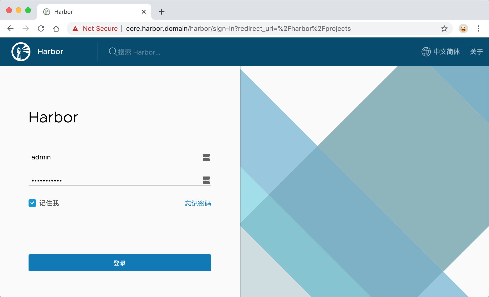
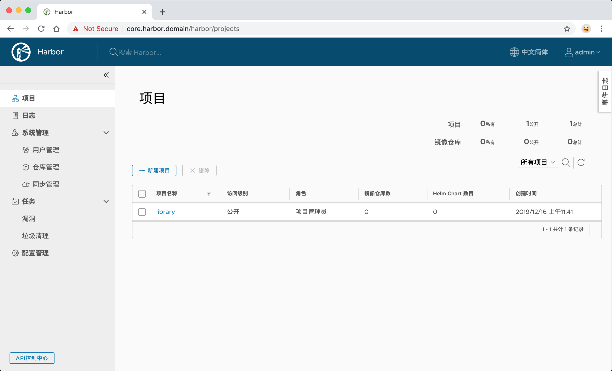
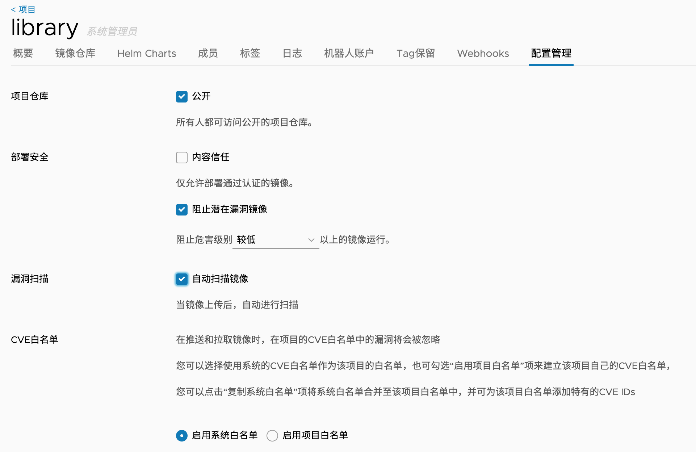
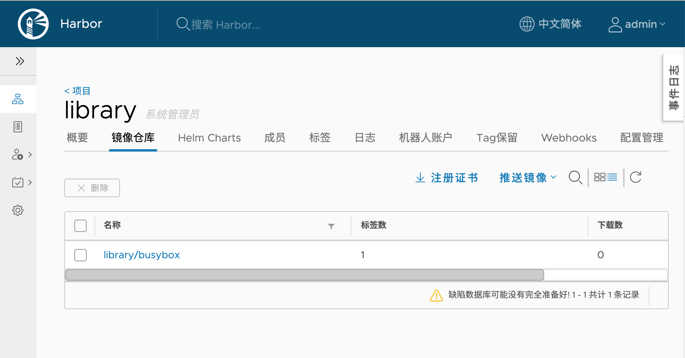

<!doctype html>
<html lang="zh" class="no-js">
  <head>
    
      <meta charset="utf-8">
      <meta name="viewport" content="width=device-width,initial-scale=1">
      
      
      
      
        <link rel="canonical" href="https://docs.prometheus.cool/devops/harbor/">
      
      <link rel="icon" href="../../assets/img/prometheus_logo.png">
      <meta name="generator" content="mkdocs-1.2.3, mkdocs-material-7.3.4">
    
    
      
        <title>Harbor - 云原生监控神器Prometheus</title>
      
    
    
      <link rel="stylesheet" href="../../assets/stylesheets/main.db9e7362.min.css">
      
        
        <link rel="stylesheet" href="../../assets/stylesheets/palette.3f5d1f46.min.css">
        
          
          
          <meta name="theme-color" content="#ef5552">
        
      
    
    
    
      
        
        <link rel="preconnect" href="https://fonts.gstatic.com" crossorigin>
        <link rel="stylesheet" href="https://fonts.googleapis.com/css?family=Ubuntu:300,400,400i,700%7CUbuntu+Mono&display=fallback">
        <style>:root{--md-text-font-family:"Ubuntu";--md-code-font-family:"Ubuntu Mono"}</style>
      
    
    
    
      <link rel="stylesheet" href="../../assets/styles/extra.css">
    
      <link rel="stylesheet" href="../../assets/styles/prism.css">
    
    
      


    
    
  </head>
  
  
    
    
    
    
    
    <body dir="ltr" data-md-color-scheme="" data-md-color-primary="red" data-md-color-accent="red">
  
    
    <script>function __prefix(e){return new URL("../..",location).pathname+"."+e}function __get(e,t=localStorage){return JSON.parse(t.getItem(__prefix(e)))}</script>
    
    <input class="md-toggle" data-md-toggle="drawer" type="checkbox" id="__drawer" autocomplete="off">
    <input class="md-toggle" data-md-toggle="search" type="checkbox" id="__search" autocomplete="off">
    <label class="md-overlay" for="__drawer"></label>
    <div data-md-component="skip">
      
        
        <a href="#harbor" class="md-skip">
          跳转至
        </a>
      
    </div>
    <div data-md-component="announce">
      
    </div>
    
      

<header class="md-header" data-md-component="header">
  <nav class="md-header__inner md-grid" aria-label="Header">
    <a href="../.." title="云原生监控神器Prometheus" class="md-header__button md-logo" aria-label="云原生监控神器Prometheus" data-md-component="logo">
      
  

    </a>
    <label class="md-header__button md-icon" for="__drawer">
      <svg xmlns="http://www.w3.org/2000/svg" viewBox="0 0 24 24"><path d="M3 6h18v2H3V6m0 5h18v2H3v-2m0 5h18v2H3v-2z"/></svg>
    </label>
    <div class="md-header__title" data-md-component="header-title">
      <div class="md-header__ellipsis">
        <div class="md-header__topic">
          <span class="md-ellipsis">
            云原生监控神器Prometheus
          </span>
        </div>
        <div class="md-header__topic" data-md-component="header-topic">
          <span class="md-ellipsis">
            
              Harbor
            
          </span>
        </div>
      </div>
    </div>
    
    
    
      <label class="md-header__button md-icon" for="__search">
        <svg xmlns="http://www.w3.org/2000/svg" viewBox="0 0 24 24"><path d="M9.5 3A6.5 6.5 0 0 1 16 9.5c0 1.61-.59 3.09-1.56 4.23l.27.27h.79l5 5-1.5 1.5-5-5v-.79l-.27-.27A6.516 6.516 0 0 1 9.5 16 6.5 6.5 0 0 1 3 9.5 6.5 6.5 0 0 1 9.5 3m0 2C7 5 5 7 5 9.5S7 14 9.5 14 14 12 14 9.5 12 5 9.5 5z"/></svg>
      </label>
      
<div class="md-search" data-md-component="search" role="dialog">
  <label class="md-search__overlay" for="__search"></label>
  <div class="md-search__inner" role="search">
    <form class="md-search__form" name="search">
      <input type="text" class="md-search__input" name="query" aria-label="搜索" placeholder="搜索" autocapitalize="off" autocorrect="off" autocomplete="off" spellcheck="false" data-md-component="search-query" required>
      <label class="md-search__icon md-icon" for="__search">
        <svg xmlns="http://www.w3.org/2000/svg" viewBox="0 0 24 24"><path d="M9.5 3A6.5 6.5 0 0 1 16 9.5c0 1.61-.59 3.09-1.56 4.23l.27.27h.79l5 5-1.5 1.5-5-5v-.79l-.27-.27A6.516 6.516 0 0 1 9.5 16 6.5 6.5 0 0 1 3 9.5 6.5 6.5 0 0 1 9.5 3m0 2C7 5 5 7 5 9.5S7 14 9.5 14 14 12 14 9.5 12 5 9.5 5z"/></svg>
        <svg xmlns="http://www.w3.org/2000/svg" viewBox="0 0 24 24"><path d="M20 11v2H8l5.5 5.5-1.42 1.42L4.16 12l7.92-7.92L13.5 5.5 8 11h12z"/></svg>
      </label>
      <nav class="md-search__options" aria-label="Search">
        
        <button type="reset" class="md-search__icon md-icon" aria-label="Clear" tabindex="-1">
          <svg xmlns="http://www.w3.org/2000/svg" viewBox="0 0 24 24"><path d="M19 6.41 17.59 5 12 10.59 6.41 5 5 6.41 10.59 12 5 17.59 6.41 19 12 13.41 17.59 19 19 17.59 13.41 12 19 6.41z"/></svg>
        </button>
      </nav>
      
    </form>
    <div class="md-search__output">
      <div class="md-search__scrollwrap" data-md-scrollfix>
        <div class="md-search-result" data-md-component="search-result">
          <div class="md-search-result__meta">
            正在初始化搜索引擎
          </div>
          <ol class="md-search-result__list"></ol>
        </div>
      </div>
    </div>
  </div>
</div>
    
    
      <div class="md-header__source">
        
<a href="https://github.com/k8stech/" title="前往仓库" class="md-source" data-md-component="source">
  <div class="md-source__icon md-icon">
    
    <svg xmlns="http://www.w3.org/2000/svg" viewBox="0 0 448 512"><path d="M439.55 236.05 244 40.45a28.87 28.87 0 0 0-40.81 0l-40.66 40.63 51.52 51.52c27.06-9.14 52.68 16.77 43.39 43.68l49.66 49.66c34.23-11.8 61.18 31 35.47 56.69-26.49 26.49-70.21-2.87-56-37.34L240.22 199v121.85c25.3 12.54 22.26 41.85 9.08 55a34.34 34.34 0 0 1-48.55 0c-17.57-17.6-11.07-46.91 11.25-56v-123c-20.8-8.51-24.6-30.74-18.64-45L142.57 101 8.45 235.14a28.86 28.86 0 0 0 0 40.81l195.61 195.6a28.86 28.86 0 0 0 40.8 0l194.69-194.69a28.86 28.86 0 0 0 0-40.81z"/></svg>
  </div>
  <div class="md-source__repository">
    GitHub
  </div>
</a>
      </div>
    
  </nav>
  
</header>
    
    <div class="md-container" data-md-component="container">
      
      
        
          
        
      
      <main class="md-main" data-md-component="main">
        <div class="md-main__inner md-grid">
          
            
              
              <div class="md-sidebar md-sidebar--primary" data-md-component="sidebar" data-md-type="navigation" >
                <div class="md-sidebar__scrollwrap">
                  <div class="md-sidebar__inner">
                    


<nav class="md-nav md-nav--primary" aria-label="Navigation" data-md-level="0">
  <label class="md-nav__title" for="__drawer">
    <a href="../.." title="云原生监控神器Prometheus" class="md-nav__button md-logo" aria-label="云原生监控神器Prometheus" data-md-component="logo">
      
  

    </a>
    云原生监控神器Prometheus
  </label>
  
    <div class="md-nav__source">
      
<a href="https://github.com/k8stech/" title="前往仓库" class="md-source" data-md-component="source">
  <div class="md-source__icon md-icon">
    
    <svg xmlns="http://www.w3.org/2000/svg" viewBox="0 0 448 512"><path d="M439.55 236.05 244 40.45a28.87 28.87 0 0 0-40.81 0l-40.66 40.63 51.52 51.52c27.06-9.14 52.68 16.77 43.39 43.68l49.66 49.66c34.23-11.8 61.18 31 35.47 56.69-26.49 26.49-70.21-2.87-56-37.34L240.22 199v121.85c25.3 12.54 22.26 41.85 9.08 55a34.34 34.34 0 0 1-48.55 0c-17.57-17.6-11.07-46.91 11.25-56v-123c-20.8-8.51-24.6-30.74-18.64-45L142.57 101 8.45 235.14a28.86 28.86 0 0 0 0 40.81l195.61 195.6a28.86 28.86 0 0 0 40.8 0l194.69-194.69a28.86 28.86 0 0 0 0-40.81z"/></svg>
  </div>
  <div class="md-source__repository">
    GitHub
  </div>
</a>
    </div>
  
  <ul class="md-nav__list" data-md-scrollfix>
    
      
      
      

  
  
  
    <li class="md-nav__item">
      <a href="../.." class="md-nav__link">
        介绍
      </a>
    </li>
  

    
      
      
      

  
  
  
    
    <li class="md-nav__item md-nav__item--nested">
      
      
        <input class="md-nav__toggle md-toggle" data-md-toggle="__nav_2" type="checkbox" id="__nav_2" >
      
      
      
      
        <label class="md-nav__link" for="__nav_2">
          监控基础与概述
          <span class="md-nav__icon md-icon"></span>
        </label>
      
      <nav class="md-nav" aria-label="监控基础与概述" data-md-level="1">
        <label class="md-nav__title" for="__nav_2">
          <span class="md-nav__icon md-icon"></span>
          监控基础与概述
        </label>
        <ul class="md-nav__list" data-md-scrollfix>
          
            
              
  
  
  
    <li class="md-nav__item">
      <a href="../../monitorbasic/whymonitor/" class="md-nav__link">
        为什么要监控
      </a>
    </li>
  

            
          
            
              
  
  
  
    <li class="md-nav__item">
      <a href="../../monitorbasic/monitorterms/" class="md-nav__link">
        监控术语
      </a>
    </li>
  

            
          
            
              
  
  
  
    <li class="md-nav__item">
      <a href="../../monitorbasic/metricstory/" class="md-nav__link">
        指标物语
      </a>
    </li>
  

            
          
            
              
  
  
  
    <li class="md-nav__item">
      <a href="../../monitorbasic/monitorcontrast/" class="md-nav__link">
        开源监控对比
      </a>
    </li>
  

            
          
        </ul>
      </nav>
    </li>
  

    
      
      
      

  
  
  
    
    <li class="md-nav__item md-nav__item--nested">
      
      
        <input class="md-nav__toggle md-toggle" data-md-toggle="__nav_3" type="checkbox" id="__nav_3" >
      
      
      
      
        <label class="md-nav__link" for="__nav_3">
          Prometheus 基础
          <span class="md-nav__icon md-icon"></span>
        </label>
      
      <nav class="md-nav" aria-label="Prometheus 基础" data-md-level="1">
        <label class="md-nav__title" for="__nav_3">
          <span class="md-nav__icon md-icon"></span>
          Prometheus 基础
        </label>
        <ul class="md-nav__list" data-md-scrollfix>
          
            
              
  
  
  
    <li class="md-nav__item">
      <a href="../../basic/prom-introduction/" class="md-nav__link">
        Prometheus介绍
      </a>
    </li>
  

            
          
            
              
  
  
  
    <li class="md-nav__item">
      <a href="../../basic/tsdb-contrast/" class="md-nav__link">
        时序数据库对比
      </a>
    </li>
  

            
          
            
              
  
  
  
    <li class="md-nav__item">
      <a href="../../basic/prom-datamodel/" class="md-nav__link">
        数据模型
      </a>
    </li>
  

            
          
            
              
  
  
  
    <li class="md-nav__item">
      <a href="../../basic/node-exporter/" class="md-nav__link">
        Node_Exporter
      </a>
    </li>
  

            
          
            
              
  
  
  
    <li class="md-nav__item">
      <a href="../../basic/prom-config/" class="md-nav__link">
        Prometheus安装与配置
      </a>
    </li>
  

            
          
        </ul>
      </nav>
    </li>
  

    
      
      
      

  
  
  
    
    <li class="md-nav__item md-nav__item--nested">
      
      
        <input class="md-nav__toggle md-toggle" data-md-toggle="__nav_4" type="checkbox" id="__nav_4" >
      
      
      
      
        <label class="md-nav__link" for="__nav_4">
          Prometheus 进阶
          <span class="md-nav__icon md-icon"></span>
        </label>
      
      <nav class="md-nav" aria-label="Prometheus 进阶" data-md-level="1">
        <label class="md-nav__title" for="__nav_4">
          <span class="md-nav__icon md-icon"></span>
          Prometheus 进阶
        </label>
        <ul class="md-nav__list" data-md-scrollfix>
          
            
              
  
  
  
    <li class="md-nav__item">
      <a href="../../advanced/auto-ops-exporter-1/" class="md-nav__link">
        自动化维护Exporter（一）
      </a>
    </li>
  

            
          
            
              
  
  
  
    <li class="md-nav__item">
      <a href="../../advanced/auto-ops-exporter-2/" class="md-nav__link">
        自动化维护Exporter（二）
      </a>
    </li>
  

            
          
            
              
  
  
  
    <li class="md-nav__item">
      <a href="../../advanced/docker-swarm-monitor-1/" class="md-nav__link">
        Docker-Swarm集群监控（一）
      </a>
    </li>
  

            
          
            
              
  
  
  
    <li class="md-nav__item">
      <a href="../../advanced/docker-swarm-monitor-2/" class="md-nav__link">
        Docker-Swarm集群监控（二）
      </a>
    </li>
  

            
          
            
              
  
  
  
    <li class="md-nav__item">
      <a href="../../advanced/commonly-exporter/" class="md-nav__link">
        常用Exporter介绍与配置
      </a>
    </li>
  

            
          
        </ul>
      </nav>
    </li>
  

    
      
      
      

  
  
  
    
    <li class="md-nav__item md-nav__item--nested">
      
      
        <input class="md-nav__toggle md-toggle" data-md-toggle="__nav_5" type="checkbox" id="__nav_5" >
      
      
      
      
        <label class="md-nav__link" for="__nav_5">
          Prometheus(警报)
          <span class="md-nav__icon md-icon"></span>
        </label>
      
      <nav class="md-nav" aria-label="Prometheus(警报)" data-md-level="1">
        <label class="md-nav__title" for="__nav_5">
          <span class="md-nav__icon md-icon"></span>
          Prometheus(警报)
        </label>
        <ul class="md-nav__list" data-md-scrollfix>
          
            
              
  
  
  
    <li class="md-nav__item">
      <a href="../../Alertmanager/promql-basic/" class="md-nav__link">
        PromQL详解（一）
      </a>
    </li>
  

            
          
            
              
  
  
  
    <li class="md-nav__item">
      <a href="../../Alertmanager/promql-operator/" class="md-nav__link">
        PromQL详解（二）
      </a>
    </li>
  

            
          
            
              
  
  
  
    <li class="md-nav__item">
      <a href="../../Alertmanager/promql-operator2/" class="md-nav__link">
        PromQL详解（三）
      </a>
    </li>
  

            
          
            
              
  
  
  
    <li class="md-nav__item">
      <a href="../../Alertmanager/promql-function/" class="md-nav__link">
        PromQL函数
      </a>
    </li>
  

            
          
            
              
  
  
  
    <li class="md-nav__item">
      <a href="../../Alertmanager/alertmanager-overview/" class="md-nav__link">
        AlertManager
      </a>
    </li>
  

            
          
            
              
  
  
  
    <li class="md-nav__item">
      <a href="../../Alertmanager/alertmanager-rules-1/" class="md-nav__link">
        Rules详解（一）
      </a>
    </li>
  

            
          
            
              
  
  
  
    <li class="md-nav__item">
      <a href="../../Alertmanager/alertmanager-rules-2/" class="md-nav__link">
        Rules详解（二）
      </a>
    </li>
  

            
          
            
              
  
  
  
    <li class="md-nav__item">
      <a href="../../Alertmanager/alertmanager-receiver/" class="md-nav__link">
        Receiver配置
      </a>
    </li>
  

            
          
            
              
  
  
  
    <li class="md-nav__item">
      <a href="../../Alertmanager/alertmanager-silences/" class="md-nav__link">
        Silences配置
      </a>
    </li>
  

            
          
        </ul>
      </nav>
    </li>
  

    
      
      
      

  
  
  
    
    <li class="md-nav__item md-nav__item--nested">
      
      
        <input class="md-nav__toggle md-toggle" data-md-toggle="__nav_6" type="checkbox" id="__nav_6" >
      
      
      
      
        <label class="md-nav__link" for="__nav_6">
          Prometheus(联邦集群)
          <span class="md-nav__icon md-icon"></span>
        </label>
      
      <nav class="md-nav" aria-label="Prometheus(联邦集群)" data-md-level="1">
        <label class="md-nav__title" for="__nav_6">
          <span class="md-nav__icon md-icon"></span>
          Prometheus(联邦集群)
        </label>
        <ul class="md-nav__list" data-md-scrollfix>
          
            
              
  
  
  
    <li class="md-nav__item">
      <a href="../../federation/federation-overview/" class="md-nav__link">
        Prometheus 联邦集群
      </a>
    </li>
  

            
          
            
              
  
  
  
    <li class="md-nav__item">
      <a href="../../federation/pushgateway/" class="md-nav__link">
        Pushgateway 代理
      </a>
    </li>
  

            
          
            
              
  
  
  
    <li class="md-nav__item">
      <a href="../../federation/alertmanager-ha/" class="md-nav__link">
        Alertmanager 高可用
      </a>
    </li>
  

            
          
        </ul>
      </nav>
    </li>
  

    
      
      
      

  
  
  
    
    <li class="md-nav__item md-nav__item--nested">
      
      
        <input class="md-nav__toggle md-toggle" data-md-toggle="__nav_7" type="checkbox" id="__nav_7" >
      
      
      
      
        <label class="md-nav__link" for="__nav_7">
          Prometheus(服务发现)
          <span class="md-nav__icon md-icon"></span>
        </label>
      
      <nav class="md-nav" aria-label="Prometheus(服务发现)" data-md-level="1">
        <label class="md-nav__title" for="__nav_7">
          <span class="md-nav__icon md-icon"></span>
          Prometheus(服务发现)
        </label>
        <ul class="md-nav__list" data-md-scrollfix>
          
            
              
  
  
  
    <li class="md-nav__item">
      <a href="../../discover-service/discovery-overview/" class="md-nav__link">
        服务发现（文件、DNS）
      </a>
    </li>
  

            
          
            
              
  
  
  
    <li class="md-nav__item">
      <a href="../../discover-service/discovery-relabeling/" class="md-nav__link">
        服务发现（Relabelling）
      </a>
    </li>
  

            
          
            
              
  
  
  
    <li class="md-nav__item">
      <a href="../../discover-service/discovery-consul/" class="md-nav__link">
        服务发现（Consul）
      </a>
    </li>
  

            
          
        </ul>
      </nav>
    </li>
  

    
      
      
      

  
  
  
    
    <li class="md-nav__item md-nav__item--nested">
      
      
        <input class="md-nav__toggle md-toggle" data-md-toggle="__nav_8" type="checkbox" id="__nav_8" >
      
      
      
      
        <label class="md-nav__link" for="__nav_8">
          Prometheus(Operator)
          <span class="md-nav__icon md-icon"></span>
        </label>
      
      <nav class="md-nav" aria-label="Prometheus(Operator)" data-md-level="1">
        <label class="md-nav__title" for="__nav_8">
          <span class="md-nav__icon md-icon"></span>
          Prometheus(Operator)
        </label>
        <ul class="md-nav__list" data-md-scrollfix>
          
            
              
  
  
  
    <li class="md-nav__item">
      <a href="../../Kubernetes/Prometheus-Operator/" class="md-nav__link">
        Operator概述
      </a>
    </li>
  

            
          
            
              
  
  
  
    <li class="md-nav__item">
      <a href="../../Kubernetes/Prometheus-Statefulsets-1/" class="md-nav__link">
        手动部署（1）
      </a>
    </li>
  

            
          
            
              
  
  
  
    <li class="md-nav__item">
      <a href="../../Kubernetes/Prometheus-Statefulsets-2/" class="md-nav__link">
        手动部署（2）
      </a>
    </li>
  

            
          
            
              
  
  
  
    <li class="md-nav__item">
      <a href="../../Kubernetes/Prometheus-Statefulsets-3/" class="md-nav__link">
        手动部署（联邦）
      </a>
    </li>
  

            
          
            
              
  
  
  
    <li class="md-nav__item">
      <a href="../../Kubernetes/Prometheus-Deploy-Operator/" class="md-nav__link">
        Operator部署
      </a>
    </li>
  

            
          
            
              
  
  
  
    <li class="md-nav__item">
      <a href="../../Kubernetes/Prometheus-HPA/" class="md-nav__link">
        HPA原理与实践
      </a>
    </li>
  

            
          
            
              
  
  
  
    <li class="md-nav__item">
      <a href="../../Kubernetes/Prometheus-Adapter/" class="md-nav__link">
        Adapter原理与实践
      </a>
    </li>
  

            
          
        </ul>
      </nav>
    </li>
  

    
  </ul>
</nav>
                  </div>
                </div>
              </div>
            
            
              
              <div class="md-sidebar md-sidebar--secondary" data-md-component="sidebar" data-md-type="toc" >
                <div class="md-sidebar__scrollwrap">
                  <div class="md-sidebar__inner">
                    
<nav class="md-nav md-nav--secondary" aria-label="目录">
  
  
  
    
  
  
    <label class="md-nav__title" for="__toc">
      <span class="md-nav__icon md-icon"></span>
      目录
    </label>
    <ul class="md-nav__list" data-md-component="toc" data-md-scrollfix>
      
        <li class="md-nav__item">
  <a href="#harbor_1" class="md-nav__link">
    Harbor 认证原理
  </a>
  
</li>
      
        <li class="md-nav__item">
  <a href="#_1" class="md-nav__link">
    安装
  </a>
  
</li>
      
        <li class="md-nav__item">
  <a href="#_2" class="md-nav__link">
    推送镜像
  </a>
  
</li>
      
    </ul>
  
</nav>
                  </div>
                </div>
              </div>
            
          
          <div class="md-content" data-md-component="content">
            <article class="md-content__inner md-typeset">
              
                
                  <a href="https://github.com/k8stech/edit/master/docs/devops/harbor.md" title="编辑此页" class="md-content__button md-icon">
                    <svg xmlns="http://www.w3.org/2000/svg" viewBox="0 0 24 24"><path d="M20.71 7.04c.39-.39.39-1.04 0-1.41l-2.34-2.34c-.37-.39-1.02-.39-1.41 0l-1.84 1.83 3.75 3.75M3 17.25V21h3.75L17.81 9.93l-3.75-3.75L3 17.25z"/></svg>
                  </a>
                
                
                <h1 id="harbor">Harbor<a class="headerlink" href="#harbor" title="Permanent link">&para;</a></h1>
<p>Harbor 是一个CNCF基金会托管的开源的可信的云原生docker registry项目，可以用于存储、签名、扫描镜像内容，Harbor 通过添加一些常用的功能如安全性、身份权限管理等来扩展 docker registry 项目，此外还支持在 registry 之间复制镜像，还提供更加高级的安全功能，如用户管理、访问控制和活动审计等，在新版本中还添加了Helm仓库托管的支持。</p>
<p>Harbor最核心的功能就是给 docker registry 添加上一层权限保护的功能，要实现这个功能，就需要我们在使用 docker login、pull、push 等命令的时候进行拦截，先进行一些权限相关的校验，再进行操作，其实这一系列的操作 docker registry v2 就已经为我们提供了支持，v2 集成了一个安全认证的功能，将安全认证暴露给外部服务，让外部服务去实现。</p>
<h2 id="harbor_1">Harbor 认证原理<a class="headerlink" href="#harbor_1" title="Permanent link">&para;</a></h2>
<p>上面我们说了 docker registry v2 将安全认证暴露给了外部服务使用，那么是怎样暴露的呢？我们在命令行中输入 <code>docker login https://registry.qikqiak.com</code> 为例来为大家说明下认证流程：</p>
<ol>
<li>docker client 接收到用户输入的 docker login 命令，将命令转化为调用 engine api 的 RegistryLogin 方法</li>
<li>在 RegistryLogin 方法中通过 http 盗用 registry 服务中的 auth 方法</li>
<li>因为我们这里使用的是 v2 版本的服务，所以会调用 loginV2 方法，在 loginV2 方法中会进行 /v2/ 接口调用，该接口会对请求进行认证</li>
<li>此时的请求中并没有包含 token 信息，认证会失败，返回 401 错误，同时会在 header 中返回去哪里请求认证的服务器地址</li>
<li>registry client 端收到上面的返回结果后，便会去返回的认证服务器那里进行认证请求，向认证服务器发送的请求的 header 中包含有加密的用户名和密码</li>
<li>认证服务器从 header 中获取到加密的用户名和密码，这个时候就可以结合实际的认证系统进行认证了，比如从数据库中查询用户认证信息或者对接 ldap 服务进行认证校验</li>
<li>认证成功后，会返回一个 token 信息，client 端会拿着返回的 token 再次向 registry 服务发送请求，这次需要带上得到的 token，请求验证成功，返回状态码就是200了</li>
<li>docker client 端接收到返回的200状态码，说明操作成功，在控制台上打印Login Succeeded的信息
至此，整个登录过程完成，整个过程可以用下面的流程图来说明：</li>
</ol>
<p>docker login</p>
<p>要完成上面的登录认证过程有两个关键点需要注意：怎样让 registry 服务知道服务认证地址？我们自己提供的认证服务生成的 token 为什么 registry 就能够识别？</p>
<p>对于第一个问题，比较好解决，registry 服务本身就提供了一个配置文件，可以在启动 registry 服务的配置文件中指定上认证服务地址即可，其中有如下这样的一段配置信息：
<pre class="highlight"><code class="language-yaml">......
auth:
  token:
    realm: token-realm
    service: token-service
    issuer: registry-token-issuer
    rootcertbundle: /root/certs/bundle
......</code></pre></p>
<p>其中 realm 就可以用来指定一个认证服务的地址，下面我们可以看到 Harbor 中该配置的内容</p>
<blockquote>
<p>关于 registry 的配置，可以参考官方文档：<a href="https://docs.docker.com/registry/configuration/">https://docs.docker.com/registry/configuration/</a></p>
</blockquote>
<p>第二个问题，就是 registry 怎么能够识别我们返回的 token 文件？如果按照 registry 的要求生成一个 token，是不是 registry 就可以识别了？所以我们需要在我们的认证服务器中按照 registry 的要求生成 token，而不是随便乱生成。那么要怎么生成呢？我们可以在 docker registry 的源码中可以看到 token 是通过JWT（JSON Web Token）来实现的，所以我们按照要求生成一个 JWT 的 token 就可以了。</p>
<p>对 golang 熟悉的同学可以去 clone 下 Harbor 的代码查看下，Harbor 采用 beego 这个 web 开发框架，源码阅读起来不是特别困难。我们可以很容易的看到 Harbor 中关于上面我们讲解的认证服务部分的实现方法。</p>
<h2 id="_1">安装<a class="headerlink" href="#_1" title="Permanent link">&para;</a></h2>
<pre class="highlight"><code class="language-shell">$ git clone https://github.com/goharbor/harbor-helm
$ cd harbor-helm &amp;&amp; git checkout v1.2.3</code></pre>
<p>首先创建存储 PV/PVC：(volume.yaml)
<pre class="highlight"><code class="language-yaml">apiVersion: v1
kind: PersistentVolume
metadata:
  name: harbor-registry
  labels:
    app: harbor-registry
spec:
  capacity:
    storage: 5Gi
  accessModes:
  - ReadWriteOnce
  persistentVolumeReclaimPolicy: Retain
  nfs:
    server: 10.151.30.11
    path: /data/k8s/harbor/registry
---
kind: PersistentVolumeClaim
apiVersion: v1
metadata:
  name: harbor-registry
  namespace: kube-ops
spec:
  accessModes:
    - ReadWriteOnce
  resources:
    requests:
      storage: 5Gi
  selector:
    matchLabels:
      app: harbor-registry
---
apiVersion: v1
kind: PersistentVolume
metadata:
  name: harbor-chartmuseum
  labels:
    app: harbor-chartmuseum
spec:
  capacity:
    storage: 5Gi
  accessModes:
  - ReadWriteOnce
  persistentVolumeReclaimPolicy: Retain
  nfs:
    server: 10.151.30.11
    path: /data/k8s/harbor/chartmuseum
---
kind: PersistentVolumeClaim
apiVersion: v1
metadata:
  name: harbor-chartmuseum
  namespace: kube-ops
spec:
  accessModes:
    - ReadWriteOnce
  resources:
    requests:
      storage: 5Gi
  selector:
    matchLabels:
      app: harbor-chartmuseum
---
apiVersion: v1
kind: PersistentVolume
metadata:
  name: harbor-jobservice
  labels:
    app: harbor-jobservice
spec:
  capacity:
    storage: 1Gi
  accessModes:
  - ReadWriteOnce
  persistentVolumeReclaimPolicy: Retain
  nfs:
    server: 10.151.30.11
    path: /data/k8s/harbor/jobservice
---
kind: PersistentVolumeClaim
apiVersion: v1
metadata:
  name: harbor-jobservice
  namespace: kube-ops
spec:
  accessModes:
    - ReadWriteOnce
  resources:
    requests:
      storage: 1Gi
  selector:
    matchLabels:
      app: harbor-jobservice
---
apiVersion: v1
kind: PersistentVolume
metadata:
  name: harbor-database
  labels:
    app: harbor-database
spec:
  capacity:
    storage: 1Gi
  accessModes:
  - ReadWriteOnce
  persistentVolumeReclaimPolicy: Retain
  nfs:
    server: 10.151.30.11
    path: /data/k8s/harbor/database
---
kind: PersistentVolumeClaim
apiVersion: v1
metadata:
  name: harbor-database
  namespace: kube-ops
spec:
  accessModes:
    - ReadWriteOnce
  resources:
    requests:
      storage: 1Gi
  selector:
    matchLabels:
      app: harbor-database
---
apiVersion: v1
kind: PersistentVolume
metadata:
  name: harbor-redis
  labels:
    app: harbor-redis
spec:
  capacity:
    storage: 1Gi
  accessModes:
  - ReadWriteOnce
  persistentVolumeReclaimPolicy: Retain
  nfs:
    server: 10.151.30.11
    path: /data/k8s/harbor/redis
---
kind: PersistentVolumeClaim
apiVersion: v1
metadata:
  name: harbor-redis
  namespace: kube-ops
spec:
  accessModes:
    - ReadWriteOnce
  resources:
    requests:
      storage: 1Gi
  selector:
    matchLabels:
      app: harbor-redis</code></pre></p>
<p>我们这里为了简单使用的是 NFS 来做共享存储，要注意在使用之前，我们需要提前在 nfs server 上手动创建 path 路径，各个节点上也必须安装 nfs，否则不能挂载，直接创建上面的存储相关的资源对象：
<pre class="highlight"><code class="language-shell">$ kubectl apply -f volume.yaml
$ kubectl get pv
NAME                 CAPACITY   ACCESS MODES   RECLAIM POLICY   STATUS   CLAIM                         STORAGECLASS   REASON   AGE
harbor-chartmuseum   5Gi        RWO            Retain           Bound    kube-ops/harbor-chartmuseum                           20m
harbor-database      1Gi        RWO            Retain           Bound    kube-ops/harbor-database                              20m
harbor-jobservice    1Gi        RWO            Retain           Bound    kube-ops/harbor-jobservice                            20m
harbor-redis         1Gi        RWO            Retain           Bound    kube-ops/harbor-redis                                 20m
harbor-registry      5Gi        RWO            Retain           Bound    kube-ops/harbor-registry                              20m
$ kubectl get pvc -n kube-ops
NAME                 STATUS   VOLUME               CAPACITY   ACCESS MODES   STORAGECLASS   AGE
harbor-chartmuseum   Bound    harbor-chartmuseum   5Gi        RWO                           20m
harbor-database      Bound    harbor-database      1Gi        RWO                           20m
harbor-jobservice    Bound    harbor-jobservice    1Gi        RWO                           20m
harbor-redis         Bound    harbor-redis         1Gi        RWO                           20m
harbor-registry      Bound    harbor-registry      5Gi        RWO                           20m</code></pre></p>
<p>然后指定自己的 values：（qikqiak-values.yaml）
<pre class="highlight"><code class="language-yaml">expose:
  type: ingress
  tls:
    enabled: true
  ingress:
    hosts:
      core: core.harbor.domain
      notary: notary.harbor.domain
externalURL: https://core.harbor.domain
persistence:
  enabled: true
  resourcePolicy: "keep"
  persistentVolumeClaim:
    registry:
      existingClaim: "harbor-registry"
      storageClass: "-"
    chartmuseum:
      existingClaim: "harbor-chartmuseum"
      storageClass: "-"
    jobservice:
      existingClaim: "harbor-jobservice"
      storageClass: "-"
    database:
      existingClaim: "harbor-database"
      storageClass: "-"
    redis:
      existingClaim: "harbor-redis"
      storageClass: "-"</code></pre></p>
<p>我们使用我们自己手动创建的 PVC 来指定存储，不过还需要注意的是需要指定 <code>storageClass: "-"</code>，否则会使用默认的 StorageClass，然后直接使用 Helm3 进行安装：
<pre class="highlight"><code class="language-shell">$ helm install harbor --namespace kube-ops ./harbor-helm -f .qikqiak-values.yaml
NAME: harbor
LAST DEPLOYED: Mon Dec 16 11:06:54 2019
NAMESPACE: kube-ops
STATUS: deployed
REVISION: 1
TEST SUITE: None
NOTES:
Please wait for several minutes for Harbor deployment to complete.
Then you should be able to visit the Harbor portal at https://core.harbor.domain.
For more details, please visit https://github.com/goharbor/harbor.</code></pre></p>
<p>稍等一会儿正常来说就可以安装成功了：
<pre class="highlight"><code class="language-shell">$ kubectl get pods -n kube-ops                                 
NAME                                           READY   STATUS    RESTARTS   AGE
harbor-harbor-chartmuseum-699d9764b7-5nvlf     1/1     Running   0          14m
harbor-harbor-clair-c9757f6cb-kjrms            1/1     Running   6          14m
harbor-harbor-core-d997f76d-bdqww              1/1     Running   0          3m1s
harbor-harbor-database-0                       1/1     Running   0          14m
harbor-harbor-jobservice-549cd6b67b-5jsgn      0/1     Running   3          14m
harbor-harbor-notary-server-7969fbdf87-tkn89   1/1     Running   0          113s
harbor-harbor-notary-signer-7fbd575976-twvwx   1/1     Running   0          113s
harbor-harbor-portal-7dddbf759c-zdmkl          1/1     Running   0          14m
harbor-harbor-redis-0                          1/1     Running   0          14m
harbor-harbor-registry-6bbb6b955f-xgdmp        2/2     Running   0          14m</code></pre></p>
<p>另外在安装过程还遇到一个问题是 redis 的权限问题，查看 redis 的 Pod 会遇到如下的错误信息：
<pre class="highlight"><code class="language-shell">$ kubectl logs -f harbor-harbor-redis-0 -n kube-ops
1:M 16 Dec 03:56:12.147 # Background saving error
1:M 16 Dec 03:56:18.066 * 1 changes in 900 seconds. Saving...
1:M 16 Dec 03:56:18.067 * Background saving started by pid 161
161:C 16 Dec 03:56:18.070 # Failed opening the RDB file dump.rdb (in server root dir /var/lib/redis) for saving: Permission denied
......</code></pre></p>
<p>这主要是因为我们这里运行的 redis 这个 Pod 中指定了一个 <code>fsGroup</code>：
<pre class="highlight"><code class="language-yaml">...
securityContext:
  fsGroup: 999
...</code></pre></p>
<p>而我们这里将数据持久化到了 NFS 上面，而持久化的目录 <code>/data/k8s/harbor/redis</code> 的 ownership 是 <code>root:root</code>，所以会权限错误，我们可以手动更改下 NFS 上面目录的 owenrship 即可：
<pre class="highlight"><code class="language-shell">$ chown 999:999 -R /data/k8s/harbor/redis</code></pre></p>
<p>由于我们指定的是 ingress 的模式，所以我们可以通过在本地 <code>/etc/hosts</code> 里面加上对应的域名解析：
<pre class="highlight"><code class="language-shell">$ kubectl get ingress -n kube-ops
NAME                    HOSTS                                     ADDRESS   PORTS     AGE
harbor-harbor-ingress   core.harbor.domain,notary.harbor.domain             80, 443   14m</code></pre></p>
<p>然后我们就可以通过 <code>core.harbor.domain</code> 去访问 Harbor 的 Dashboard 页面了，由于我们配置了自动跳转，所以会自动跳转到 https：</p>
<p></p>
<p>然后可以使用 <code>admin:Harbor12345</code> 进行登录：</p>
<p></p>
<p>我们可以看到有很多功能，默认情况下会有一个名叫 <code>library</code> 的项目，改项目默认是公开访问权限的，进入项目可以看到里面还有 <code>Helm Chart</code> 包的管理，可以手动在这里上传，也可以对改项目里面的镜像进行一些配置，比如是否开启自动扫描镜像功能：</p>
<p></p>
<h2 id="_2">推送镜像<a class="headerlink" href="#_2" title="Permanent link">&para;</a></h2>
<p>然后我们来测试下使用 <code>docker cli</code> 来进行 <code>pull/push</code> 镜像，由于上面我们安装的时候通过 Ingress 来暴露的 Harbor 的服务，而且强制使用了 https，所以如果我们要在终端中使用我们这里的私有仓库的话，就需要配置上相应的证书：
<pre class="highlight"><code class="language-shell">$ docker login core.harbor.domain
Username: admin
Password:
Error response from daemon: Get https://core.harbor.domain/v2/: x509: certificate signed by unknown authority</code></pre></p>
<p>这是因为我们没有提供证书文件，我们将使用到的 <code>ca.crt</code> 文件复制到 <code>/etc/docker/certs.d/core.harbor.domain</code> 目录下面，如果该目录不存在，则创建它。<code>ca.crt</code> 这个证书文件我们可以通过 Ingress 中使用的 Secret 资源对象来提供：
<pre class="highlight"><code class="language-shell">$ kubectl get secret harbor-harbor-ingress -n kube-ops -o yaml
apiVersion: v1
data:
  ca.crt: &lt;ca.crt&gt;
  tls.crt: &lt;tls.crt&gt;
  tls.key: &lt;tls.key&gt;
kind: Secret
metadata:
  creationTimestamp: "2019-12-16T03:29:59Z"
  labels:
    app: harbor
    chart: harbor
    heritage: Helm
    release: harbor
  name: harbor-harbor-ingress
  namespace: kube-ops
  resourceVersion: "11786346"
  selfLink: /api/v1/namespaces/kube-ops/secrets/harbor-harbor-ingress
  uid: aaf69ffc-aaa1-439b-98ae-e8a2c13d7ea4
type: kubernetes.io/tls</code></pre></p>
<p>其中 data 区域中 <code>ca.crt</code> 对应的值就是我们需要证书，不过需要注意还需要做一个 base64 的解码，这样证书配置上以后就可以正常访问了。</p>
<p>不过由于上面的方法较为繁琐，所以一般情况下面我们在使用 <code>docker cli</code> 的时候是在 docker 启动参数后面添加一个 <code>--insecure-registry</code> 参数来忽略证书的校验的，在 docker 启动配置文件 <code>/usr/lib/systemd/system/docker.service</code> 中修改ExecStart的启动参数：
<pre class="highlight"><code class="language-shell">ExecStart=/usr/bin/dockerd --insecure-registry core.harbor.domain</code></pre></p>
<p>或者在 Docker Daemon 的配置文件中添加：
<pre class="highlight"><code class="language-json">$ cat /etc/docker/daemon.json
{
  "insecure-registries" : [
    "core.harbor.domain"
  ],
  "registry-mirrors" : [
    "https://ot2k4d59.mirror.aliyuncs.com/"
  ]
}</code></pre></p>
<p>然后保存重启 docker，再使用 docker cli 就没有任何问题了：
<pre class="highlight"><code class="language-shell">$ docker login core.harbor.domain
Username: admin
Password:
Login Succeeded</code></pre></p>
<p>比如我们本地现在有一个名为 busybox 的镜像，现在我们想要将该镜像推送到我们的私有仓库中去，应该怎样操作呢？首先我们需要给该镜像重新打一个 <code>core.harbor.domain</code> 的前缀，然后推送的时候就可以识别到推送到哪个镜像仓库：
<pre class="highlight"><code class="language-shell">$ docker tag busybox core.harbor.domain/library/busybox
$ docker push core.harbor.domain/library/busybox
The push refers to repository [core.harbor.domain/library/busybox]
adab5d09ba79: Pushed 
latest: digest: sha256:4415a904b1aca178c2450fd54928ab362825e863c0ad5452fd020e92f7a6a47e size: 527</code></pre></p>
<p>推送完成后，我们同样可以在 Portal 页面上看到这个镜像的信息：
</p>
<p>镜像 push 成功，同样可以测试下 pull：
<pre class="highlight"><code class="language-shell">$ docker rmi core.harbor.domain/library/busybox
Untagged: core.harbor.domain/library/busybox:latest
Untagged: core.harbor.domain/library/busybox@sha256:4415a904b1aca178c2450fd54928ab362825e863c0ad5452fd020e92f7a6a47e
$ docker rmi busybox
Untagged: busybox:latest
Untagged: busybox@sha256:061ca9704a714ee3e8b80523ec720c64f6209ad3f97c0ff7cb9ec7d19f15149f
$ docker pull core.harbor.domain/library/busybox:latest
latest: Pulling from library/busybox
Digest: sha256:4415a904b1aca178c2450fd54928ab362825e863c0ad5452fd020e92f7a6a47e
Status: Downloaded newer image for core.harbor.domain/library/busybox:latest

$ docker images |grep busybox
docker images |grep busybox
core.harbor.domain/library/busybox                        latest              d8233ab899d4        10 months ago       1.2MB</code></pre></p>
<p>到这里证明上面我们的私有 docker 仓库搭建成功了，大家可以尝试去创建一个私有的项目，然后创建一个新的用户，使用这个用户来进行 pull/push 镜像，Harbor 还具有其他的一些功能，比如镜像复制，大家可以自行测试，感受下 Harbor 和官方自带的 registry 仓库的差别。</p>
                
              
              
                


              
            </article>
          </div>
        </div>
        
      </main>
      


<!-- Application footer -->
<footer class="md-footer">

    <!-- Further information -->
    <div class="md-footer-meta md-typeset">
        <div class="md-footer-meta__inner md-grid">

            <!-- Copyright and theme information -->
            <div class="md-footer-copyright">
                
                <div class="md-footer-copyright__highlight">
                    Copyright &copy; 2020 Kubernetes技术栈
                </div>
                
                powered by
                <a href="https://www.k8stech.net" title="Kubernetes技术栈">www.k8stech.net</a>
            </div>

            <!-- Social links -->
            
            
            
        </div>
    </div>
</footer>


    </div>
    <div class="md-dialog" data-md-component="dialog">
      <div class="md-dialog__inner md-typeset"></div>
    </div>
    <script id="__config" type="application/json">{"base": "../..", "features": [], "translations": {"clipboard.copy": "\u590d\u5236", "clipboard.copied": "\u5df2\u590d\u5236", "search.config.lang": "ja", "search.config.pipeline": "trimmer, stemmer", "search.config.separator": "[\\uff0c\\u3002]+", "search.placeholder": "\u641c\u7d22", "search.result.placeholder": "\u952e\u5165\u4ee5\u5f00\u59cb\u641c\u7d22", "search.result.none": "\u6ca1\u6709\u627e\u5230\u7b26\u5408\u6761\u4ef6\u7684\u7ed3\u679c", "search.result.one": "\u627e\u5230 1 \u4e2a\u7b26\u5408\u6761\u4ef6\u7684\u7ed3\u679c", "search.result.other": "# \u4e2a\u7b26\u5408\u6761\u4ef6\u7684\u7ed3\u679c", "search.result.more.one": "1 more on this page", "search.result.more.other": "# more on this page", "search.result.term.missing": "Missing", "select.version.title": "Select version"}, "search": "../../assets/javascripts/workers/search.8397ff9e.min.js", "version": null}</script>
    
    
      <script src="../../assets/javascripts/bundle.1e84347e.min.js"></script>
      
        <script src="../../assets/js/hljs/highlight.pack.js"></script>
      
        <script src="../../assets/js/prism.js"></script>
      
    
  </body>
</html>